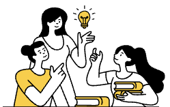
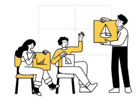

Turn on dynamics

SoundLoop
Sign In
Don't have an account?
Find track
Tap to recognize a song
Demo: the app picks an example track, it does not listen to your microphone.
History
Trends
Your music
Playlist 1
Your profile
Favorite music

About Us
SoundLoop – это музыкальное приложение, которое объединяет прослушивание и распознавание треков в одном месте. Услышали классную песню в кафе, машине или у друзей – просто нажмите кнопку и узнайте, что играет, а затем сразу добавьте трек в свою библиотеку и слушайте без ограничений.